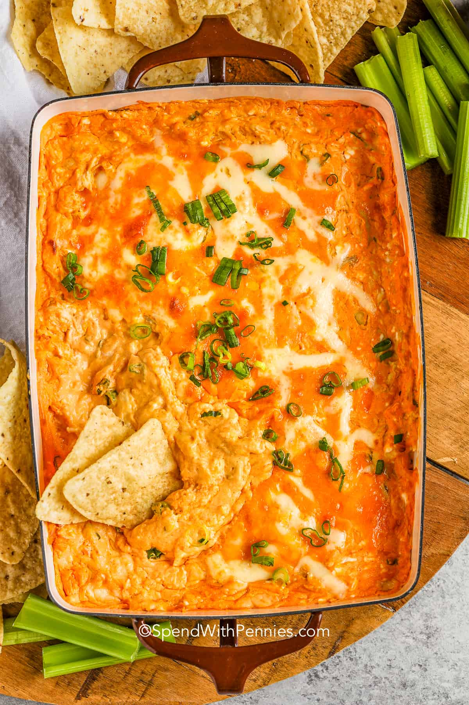

Chicken Wing Dip

Description
You don't need to be a sports fan to appreciate this game day staple. Chicken, cheese, and tangy wing sauce
make this a champion of crowd-pleasing snack food. If anyone asks how you made it,
proudly declare that it's the first google result for "Chicken Wing Dip Recipe."
Ingredients
- 2 (8 ounce) packages cream cheese, softened
- ¾ cup hot pepper sauce
- 2 cups diced cooked chicken
- 1 cup Ranch-style salad dressing/li>
- 1 cup shredded Cheddar cheese
Steps
- Preheat the oven to 350 degrees F (175 degrees C).
- Mix cream cheese and hot pepper sauce together in a medium bowl
until well blended; stir in chicken, dressing, and Cheddar cheese.
Spread into a 9x13-inch baking dish.
- Bake in the preheated oven until bubbly, about 30 minutes.
If oil collects on the top, dab it off using a paper towel.
- Serve with your favorite tortilla chips!